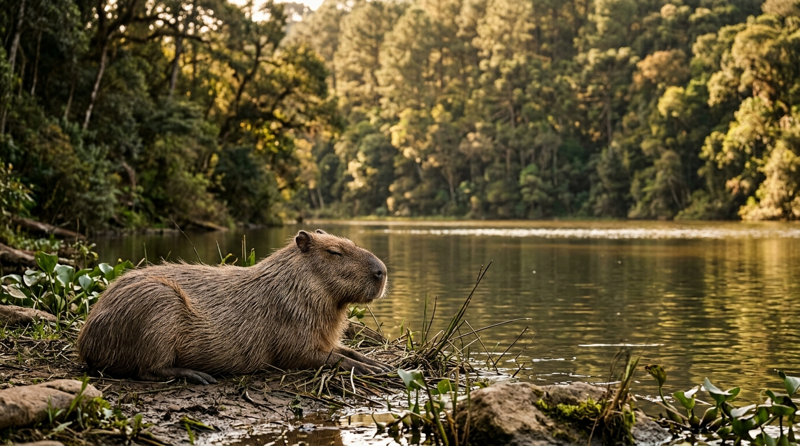

Clima, Flora y Fauna Autóctona
Con un clima templado serrano ideal (22 °C a 30 °C en verano), la ciudad está rodeada por un denso bosque de pinos y robles que bordea el lago principal. En este entorno es común avistar zorros grises entre la hojarasca de los robles, carpinchos cerca de la orilla del agua y majestuosos cóndores andinos sobrevolando las copas de los pinos y las cumbres de las sierras.